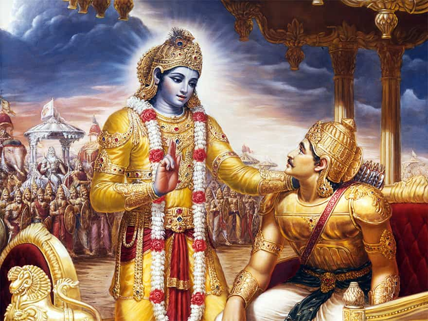
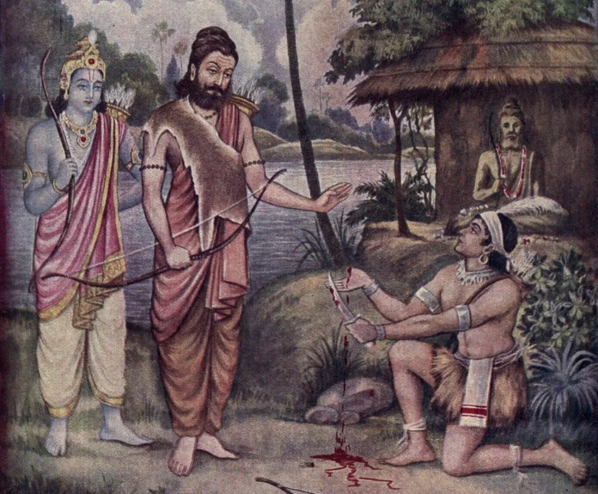
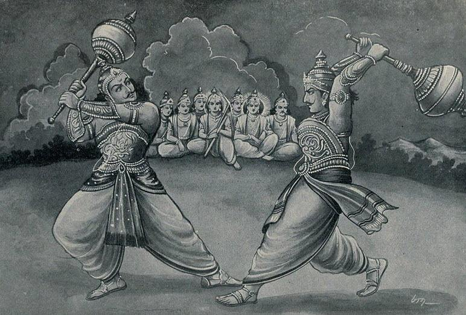
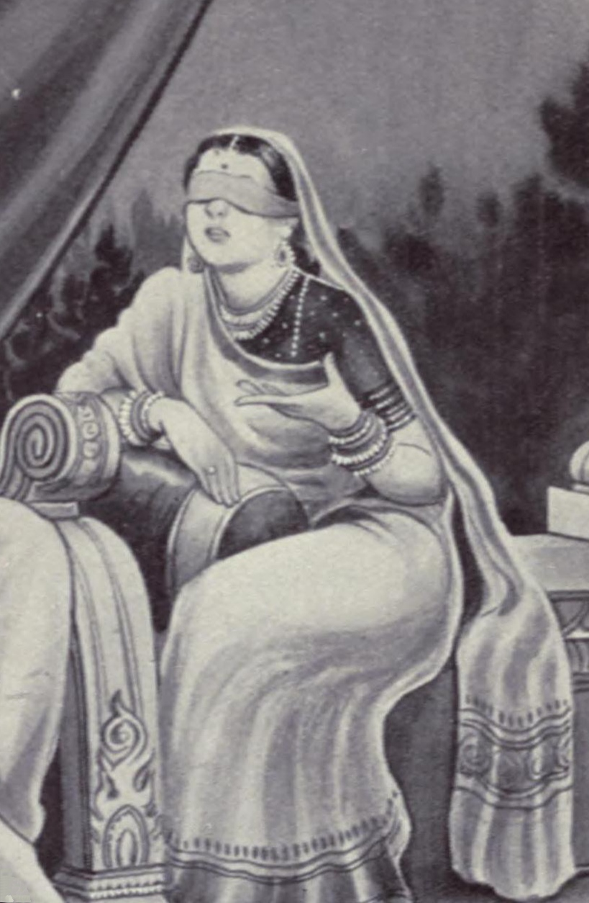

Krishna
Lord Krishna is a Hindu deity. He is also a major character in epic Mahabharata. He was an eighth avatar of lord Vishnu/Narayana. He was born to Devaki and her husband, Vasudeva of the Yadava clan in Mathura. During the Kurukshetra War, he became strategist of Padavas and charioteer of Arjuna. At the start of the Dharma Yudhha (righteous war) between Pandavas and Kauravas, Arjuna is filled with moral dilemma and despair about the violence and death the war will cause in the battle against his own kin. He wonders if he should renounce and seeks Krishna's counsel, whose answers and discourse constitute the Bhagavad Gita. Krishna counsels Arjuna to "fulfill his Kshatriya (warrior) duty to uphold the Dharma" through "selfless action".

Arjuna
Arjuna is one of the major characters in Mahabharata. Arjuna plays the listener's role in Bhagavad Gita. Arjuna was the son of Pandu and Kunti in the Kuru Kingdom. He was the spiritual son of Indra. He was the 3rd of the Pandava brothers and was married to Draupadi, Ulupi, Chitrāngadā and Subhadra at different times. His 4 children included Iravan, Babruvahana, Abhimanyu and Srutakarma. Krishna was his cousin and mentor.

Draupadi
Draupadi is the most important female and one of the most important characters in Mahabharata.
She was born from a fire organized by Panchala King Drupada and is described to be the most beautiful woman of her time. She was married to five Pandavas, who fought their cousins, the Kauravas in the great Kurukshetra War. She had five sons from each Pandava, who were collectively addressed as the Upapandavas.

Bhima
Bhima is the 2nd born of the Pandavas. He was the son of Pandu and Kunti and spiritual son of Vayu. The Mahabharata relates many events which portray the might of Bhima. Physically, Bhima was the strongest person on Earth after Hanuman and Balarama. Bhima killed demons including Bakasura, Hidimbasura, Kirmira, Jatasura, etc. Bhima defeated and killed fearsome warrior Jarasandha. Bhima also slew Krodhavanshas, demon Maniman, and Kichaka. In Kurukshetra war, Bhima alone killed 100 Kaurava brothers. He was considered to have the physical strength of 10,000 elephants approximately. Bheema was an invincible wrestler and invincible mace fighter.

Ekalavya
Ekalavya is a character from the epic the Mahābhārata. He was a young prince of the Nishadha, a confederation of jungle tribes (Adivasi) in Ancient India.

Duryodhana
Duryodhana also is known as Suyodhana, is a major antagonist in Mahabharata and was the eldest of the Kauravas, the hundred sons of a blind king Dhritarashtra and Queen Gandhari. Being the firstborn son of the blind king, he was the crown prince of Kuru Kingdom and its capital Hastinapura along with his cousin Yudhishtra who was older than him. Karna was Duryodhana's closest friend.

Gandhari
Gandhari is a prominent character in the Indian epic the Mahabharata. She was a princess of Gandhara (modern-day Khyber-Pakhtunkhwa) and the wife of Dhritrashtra, the blind king of Hastinapura, and the mother of a hundred sons, the Kauravas.
Ganga
In the Mahabharata, Ganga was the first wife of Shantanu, and the mother of heroic warrior-patriarch, Bhishma. When she met Shantanu for the first time, Shantanu asked her to become his wife. She agreed on the condition that he wouldn't ask her a single question. Later, she gave birth to 8 children, who were Vasus reborn as mortals due to a curse. Ganga drowned her seven sons as the Vasus requested her to do so. However, Shantanu stopped her from drowning their eighth son, who was Bhishma, and asked her questions. Ganga's condition was broken and she left Shantanu. However, she promised him to return his son. When Bhishma is mortally wounded in the Kurukshetra War, Ganga came out of the water in human form and wept uncontrollably over his body.
Radhaa
Radha was the foster mother of Karna, one of the central characters in the Hindu epic Mahabharata. She was the wife of Adhiratha, the charioteer of Bhishma. Radha also bore a son named Shon. The young Kunti used a mantra to beget a son from the Sun god Surya. Afraid of the taint of being an unwed mother, she placed the baby in a basket and set him afloat a river. The child later known as Karna was found and adopted by Radha and Adiratha, who raised Karna as their own. Karna is known by the matronymic Radheya. Karna, once he knows from Krishna and Kunti about his birth secret, having done so much harm to his brothers Pandavas, was in no position to abandon Duryodhana.[58]
Rukmini
Rukmini was the first and chief queen consort of Krishna. She was an avatar of goddess Lakshmi. She was the daughter of king Bhishmaka, sister of Rukmi and the princess of Vidarbha.

Bhishma
Originally named as 'Devavrata', he was the eighth son of the Kuru King Shantanu and the river goddess Ganga. Bhishma was blessed with a boon from his father that he could choose the time of his death or he may remain immortal till he desires. He was related to both the Pandavas and the Kauravas through his half-brother, Vichitravirya (Son of Satyavati). He was one of the best archers and one of the greatest warriors of his time and he was trained by Lord Parashurama. On one of the occasions, he gave a tough fight to Parashurama- no Kshatriya achieved this feat.

Chandra
Chandra is the moon god. He is son of Anusuya and Atri. The Chandravanshi (lunar dynasty) is named after him as he started it. Chandra had an affair with Tara, Brihaspati's wife. From their union, Tara became pregnant with Chandra's son, Budha. Budha's son, Pururavas, was the first king of the lunar dynasty. Later, Chandra married Rohini and a son named Varchas was born.


{kind=link}
{kind=link}
{kind=link}
{kind=link}
{kind=link}
{kind=link}
{kind=link}
{kind=link}